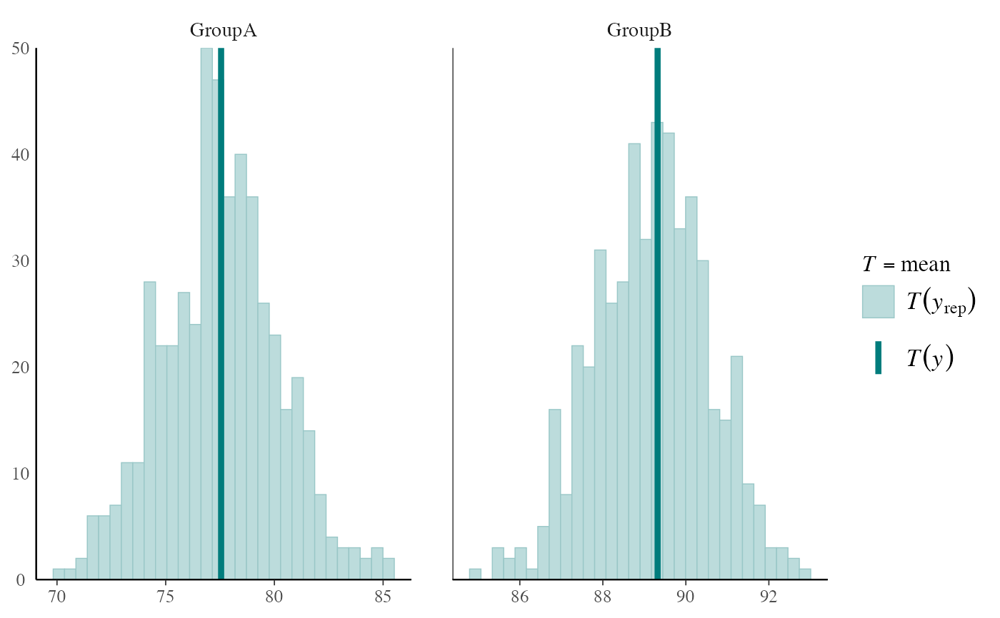

PPC test statistics
The distribution of a test statistic T(yrep), or a pair of test
statistics, over the simulated datasets in yrep, compared to the
observed value T(y) computed from the data y. See the
Plot Descriptions and Details sections, below.
ppc_stat(y, yrep, stat = "mean", ..., binwidth = NULL, freq = TRUE) ppc_stat_grouped(y, yrep, group, stat = "mean", ..., binwidth = NULL, freq = TRUE) ppc_stat_freqpoly_grouped(y, yrep, group, stat = "mean", ..., binwidth = NULL, freq = TRUE) ppc_stat_2d(y, yrep, stat = c("mean", "sd"), ..., size = 2.5, alpha = 0.7)
Arguments
| y | A vector of observations. See Details. |
|---|---|
| yrep | An \(S\) by \(N\) matrix of draws from the posterior
predictive distribution, where \(S\) is the size of the posterior sample
(or subset of the posterior sample used to generate |
| stat | A single function or a string naming a function, except for
|
| ... | Currently unused. |
| binwidth | An optional value used as the |
| freq | For histograms, |
| group | A grouping variable (a vector or factor) the same length as
|
| size, alpha | Arguments passed to |
Value
A ggplot object that can be further customized using the ggplot2 package.
Details
For Binomial data, the plots will typically be most useful if
y and yrep contain the "success" proportions (not discrete
"success" or "failure" counts).
Plot Descriptions
ppc_statA histogram of the distribution of a test statistic computed by applying
statto each dataset (row) inyrep. The value of the statistic in the observed data,stat(y), is overlaid as a vertical line.ppc_stat_grouped,ppc_stat_freqpoly_groupedThe same as
ppc_stat, but a separate plot is generated for each level of a grouping variable. In the case ofppc_stat_freqpoly_groupedthe plots are frequency polygons rather than histograms.ppc_stat_2dA scatterplot showing the joint distribution of two test statistics computed over the datasets (rows) in
yrep. The value of the statistics in the observed data is overlaid as large point.
References
Gelman, A., Carlin, J. B., Stern, H. S., Dunson, D. B., Vehtari, A., and Rubin, D. B. (2013). Bayesian Data Analysis. Chapman & Hall/CRC Press, London, third edition. (Ch. 6)
See also
Other PPCs: PPC-discrete,
PPC-distributions,
PPC-errors, PPC-intervals,
PPC-loo, PPC-overview,
PPC-scatterplots
Examples
#>#>ppc_stat_2d(y, yrep)#>#># use your own function to compute test statistics color_scheme_set("brightblue") q25 <- function(y) quantile(y, 0.25) ppc_stat(y, yrep, stat = "q25") # legend includes function name#># can define the function in the 'stat' argument but then # the legend doesn't include a function name ppc_stat(y, yrep, stat = function(y) quantile(y, 0.25))#>